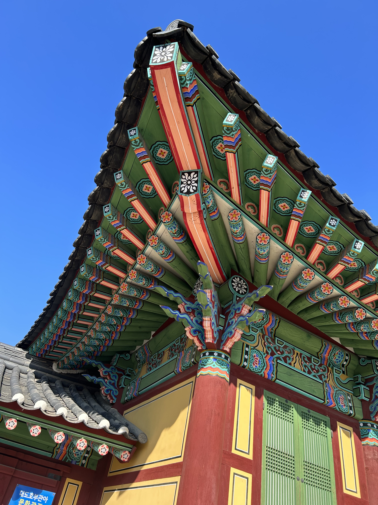
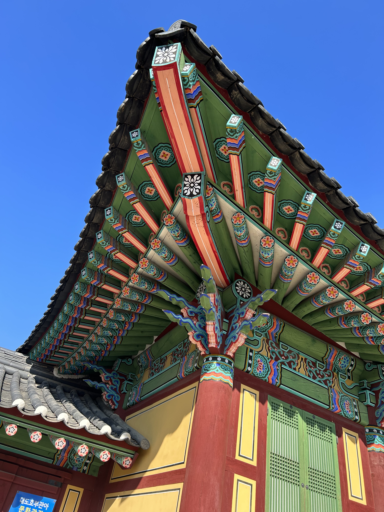

여행일기

졸업여행(후훗) 다음 졸업여행은 우리 졸업시기 다 달라서 졸업여행 4번 갈 수 있음
지찬비앤비 역사의 시작
 

경복궁가면 가슴이 아리지 않아?.jpg
...(중략)아무것도 기억나지 않는데 가슴이 너무 아리고 눈물이 나..
경복궁에 누가 나를 기다리고 있었던 것처럼, 아니. 누굴 만나야 하는 것처럼..
전생에 공주.. 뭐 그런 거 였냐고..
지찬이 ㄹㅇ 전생에 수랏간 나인이었을 듯. 심민지 상궁. 이시은 중전마마. 이다송 크림이.

여기서 하여자 썰 등장함 (생략)


우후훗 🌊

ㄹㅈㄷ 맛집투어 흑맥주 생각나버림